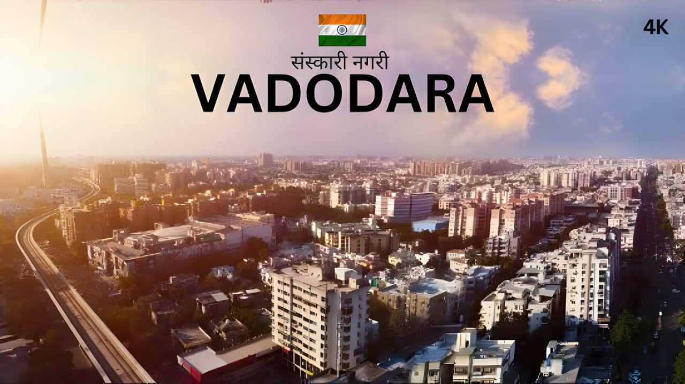
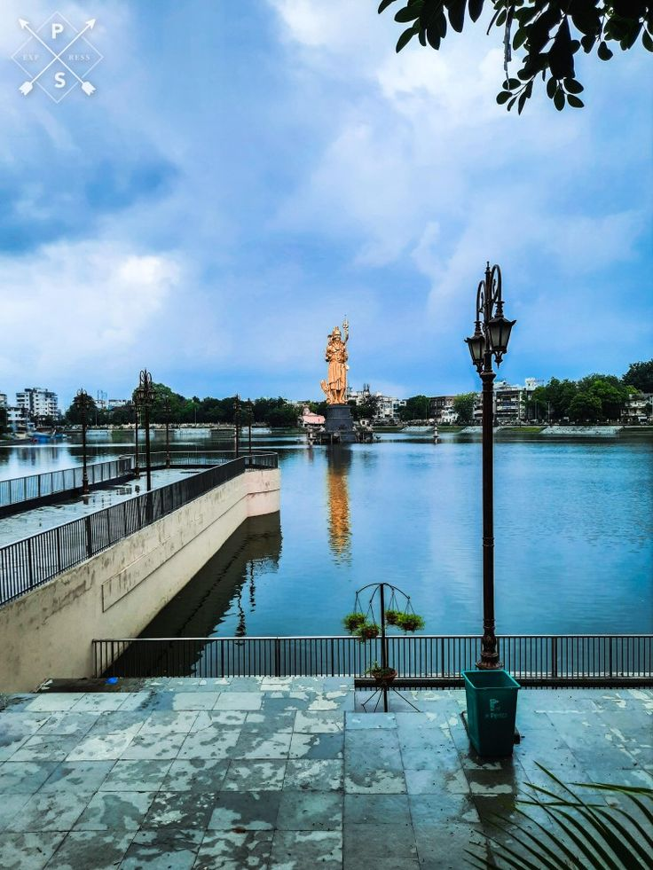
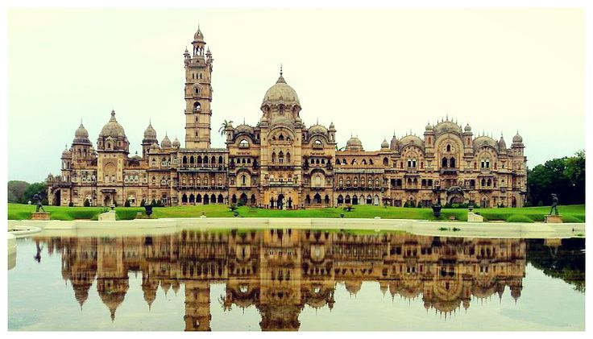
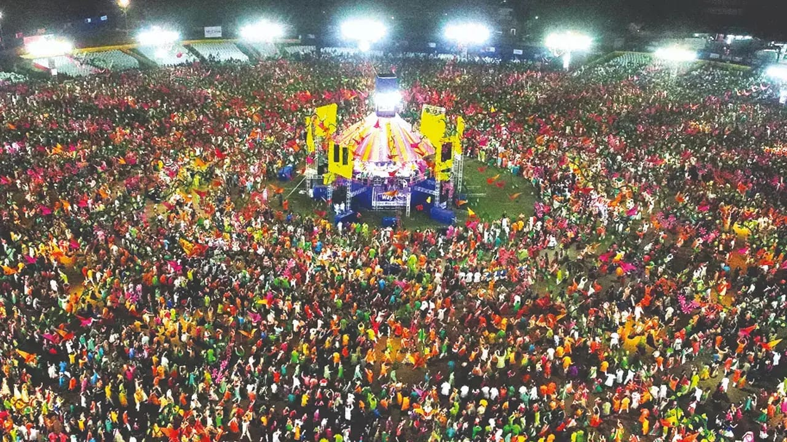
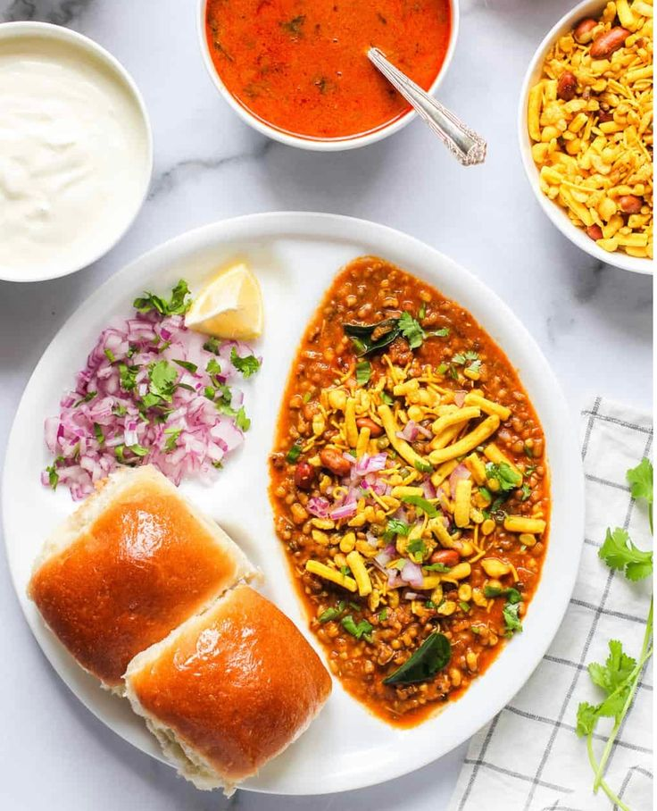

Local Market (Mandvi Market)
Mandvi Market is a bustling shopping area in Vadodara, known for its traditional clothes, jewelry, and local delicacies. It reflects the lively spirit of the city’s culture and commerce.


Vadodara Over_all View
Vadodara, also known as Baroda, is a cultural capital of Gujarat. Famous for its royal heritage, educational institutions, and vibrant festivals, the city beautifully blends tradition with modernity.
Peaceful Nature Spot (Sursagar Lake)
Sursagar Lake is a popular spot in Vadodara, surrounded by bustling streets yet offering a peaceful environment. The large statue of Lord Shiva in the middle of the lake adds to its charm.


Historical Place (Laxmi Vilas Palace)
Laxmi Vilas Palace is one of the grandest palaces in India, built by the Gaekwad dynasty. Its Indo-Saracenic architecture and sprawling gardens showcase the royal heritage of Vadodara.
Local Market (Mandvi Market)
Mandvi Market is a bustling shopping area in Vadodara, known for its traditional clothes, jewelry, and local delicacies. It reflects the lively spirit of the city’s culture and commerce.

Famous Festivals(Navratri – Garba)
Vadodara is considered the “Garba capital” of Gujarat, and Navratri is celebrated here with unmatched enthusiasm. Thousands of people gather to perform garba, making it a spectacular cultural event.
Famous Local Food Items (Street Food → Sev Usal)
Sev Usal is a spicy street food dish unique to Vadodara. Made with peas curry topped with crunchy sev, it is a favorite among locals and a must-try for visitors.
